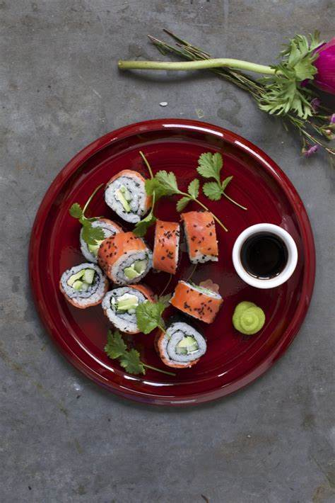

Smoked salmon and avocado sushi
A bamboo mat is the only necessity, other than that, the saucepan, cling film and sharp knife are most likely already in your drawers.
For the salmon uramaki
- 250g of sushi rice
- 2 tbsp of rice vinegar
- 1 tsp caster sugar
- 4 sheets of nori seaweed, square
- 1/4 cucumber, sliced into thin strips
- 1 handful of coriander leaves
- 1/2 avocado, small and ripe, thinly sliced
- 4 tbsp of mascarpone
- 200g of smoked salmon
To serve
- 2 tsp wasabi paste
- 3 tbsp of soy sauce
Preparation
- Place the rice in large bowl. Cover with cold water and wash the rice, swishing it with your hands until the water is cloudy. Drain the water and repeat until the water is almost clear – probably about 4–5 changes of water
- Once the water is almost clear, drain and add 285ml water to the pan. Sprinkle in a little salt, put the lid on and bring to the boil. Once the water is boiling, turn the heat down to the lowest level and cook for 10 minutes, then remove from the heat and leave to stand. Leave the lid on for another 10 minutes before removing the lid.
- While the rice cooks, stir together the rice wine vinegar and caster sugar until the sugar dissolves. Fluff the cooked rice and turn out into a large bowl. Cool for a moment before stirring through the sushi vinegar
- Start with your bamboo mat. Lay a square of cling film on top of the mat and place a sheet of nori on top of the cling film. With dampened fingers press roughly 1/4 of the rice over two thirds of the nori leaving about 2cm strip uncovered. Turn over so the nori sheet is rice-side down
- Spread a little mascarpone in a line at the base of the nori at the end that isn't covered in rice on the other side. Top with a line of avocado, cucumber and coriander
- Dampen the nori that isn’t covered in rice and roll over the filling, then roll further to form a tube, pressing together
well using the bamboo mat.
Step 7
- Sit the sushi roll on your counter and spread the surface with a little mascarpone (to ensure the smoked salmon will attach). Lay over the salmon and gently flatten to the side of the sticky rice with your hands
- Cut into roughly 2cm rounds using a very sharp knife. Sprinkle with nigella seeds and serve, alongside a little soy and wasabi.